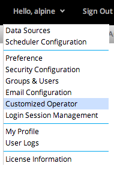
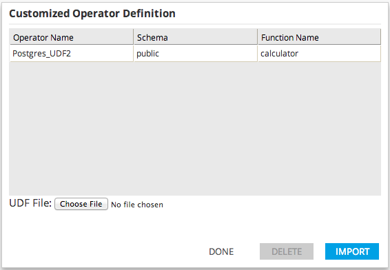

To open the Customized Operator Definition Management dialog click the user drop down button, then click Customized Operator.

A dialog will be displayed showing all customized operators in the system. Click anywhere in a row and click the delete button to remove the corresponding operator definition from the system.
To import a UDF, browse to the UDF file and click Import.
